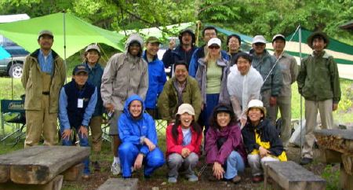
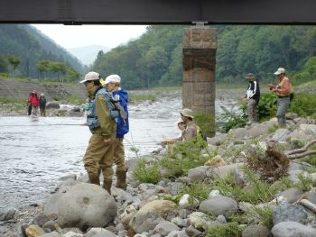
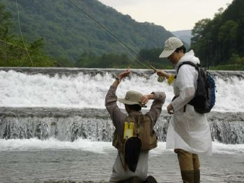
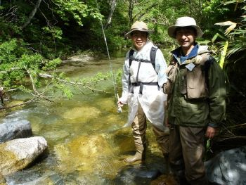
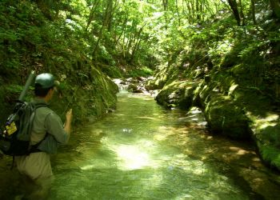
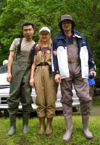
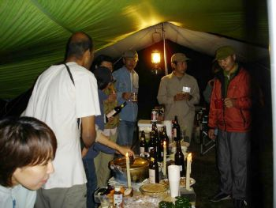

Aizu Fly Fishing,Jun 4-5, 2005(organised by Ajay & Ryoko)Photos by Ginny and Zsolt, report by Prem Dana |
 |
|  |  |  | ||
|  |
Well Drasta and myself had a wonderful
time with about 8 other happy campers with the Japanese Fly Fishing
Association on their first sojourn into being professional fly
fishing guides. I am sure we were an interestinggroup for them to practice on as were
all total beginners! I had been wanting to fly fish for some time
now was very pleased when Ajay and Ryoko announced this trip to
Minami Aizu in Fukushima prefecture.
Before our first session of fly fishing
we made camp, then geared up- in huge waders. We began the lesson in
a relatively wide river near a bridge where we practiced the
beginning basics of how to tie surgeons and clinchknots, how to wade a stream and how to
cast. There were many instructors so that most of us received
individual attention I was initially a bit intimidated by my silent
instructor but he turned out to be a gem and was extremely patient
and full of love for the art of fly fishing (I hardly dare call it a
sport). We were given a demonstration of Japanese style fly fishing
also which evolved concurrently but independently of the European
style. 3 fish were caught that day in total!
That night we spent at the camp site
with a great BBQ and a Daal made by Ajay provided. There was also
some impromptu fish education with Yamame (lady in the mountain) and
Iwana ( rock fish ) photos shown. The next morning, after a night of heavy rain ,we
started out late but it was still a very fulfilling morning of fly
fishing and wading up a very beautiful stream. Our guide also cut
some plants form the side of the river which we ate - Udo- which he
said was also very good for tempura. He also dug form rocks on the
river bed and showed us various stages of insect life. I became very
aware of the insect life around me and their different colors and
shapes. As the day progressed and the sun began to shine a myriad of
colors reflected on the waters surface and though I did not see the
elusive Yamame I could imagine its beauty lying somewhere not too
far away.
In the feedback session the casting of
fly fishing was compared to the actions of sumie. I too became aware
of something refined in this experience so that my natural
Australian love and at-homeness with nature was somehowtransformed into a feeling of unity!
This was truly yet another highlight in my time here in Japan that
the love and care of TWMC has again given me.
Thank you.! |
 | ||
|  | ||||